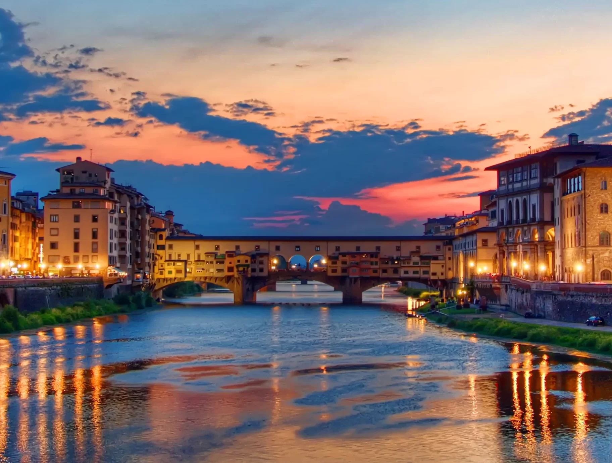
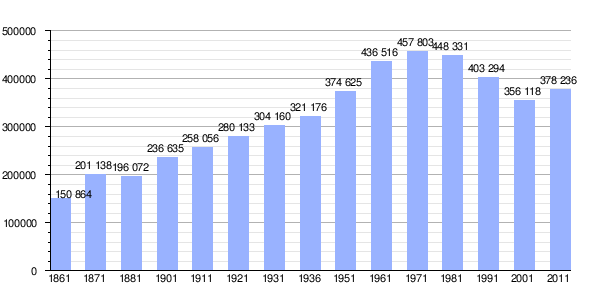

Florencia, la ciudad capaz de emocionarnos: "La primera vez que vi el Duomo, empecé a llorar"
Esta noticia trata de un video de un hombre que al llegar y ver la Piazza del Duomo enmpezó a llorar de la belleza que tenia ante sus ojos.
Leer Noticia

Una de las primeras y mejores cosas que hacer en Florencia es acercarte a la impresionante Piazza del Duomo, situada en el corazón del centro histórico, para visitar la Catedral de Santa María del Fiore (Duomo).
Antes de entrar te recomendamos observarla desde diferentes puntos del exterior para ver su impresionante fachada realizada en mármol blanco y verde repleta de detallas y la famosa cúpula de Filippo Brunelleschi, construida en 1420 y considerada uno de las grandes hitos de la historia de la arquitectura. Recuerda que una buena foto de la cúpula la obtendrás desde la calle Via dei Servi.
Una vez en el interior, en el que se encuentra la tumba de Brunelleschi, te sorprenderán las grandes dimensiones de la catedral y las increíbles escenas pintadas del juicio final de la cúpula, que se pueden observar de más cerca subiendo los 463 escalones que te llevarán hasta lo alto de la misma, desde donde disfrutarás de una fantástica panorámica de la ciudad.
Ten en cuenta que la entrada al Duomo es gratuita pero el acceso a la cúpula es de pago.
Para conocer mejor la historia de la catedral y no perderte ningún detalle puedes reservar este tour que incluye la subida a la cúpula.
La piazza del Duomo es un lugar de interes por que es el corazón de la esta magnífica ciudad. Además de algunos aconteciemientos importantes como el Asesinato de Giuliano de' Medici (1478) o la Inundación de 1966.
Además de algunas escenas de series y películas que se ha realizado y grabado allí, como: La casa de papel.
📍: Piazza del Duomo, Florencia
El Ponte Vecchio es uno de los puentes medievales más bonitos del mundo y otro de los lugares que ver en Florencia.
Considerado como el más antiguo de Europa, este puente de piedra, enamora a primera vista por sus casas colgantes de colores ocres en ambos laterales, sus cuidadas tiendas de joyas y por las vistas al río desde su parte central.
Como curiosidad, fue de los pocos puentes que no se destruyeron durante la Segunda Guerra Mundial y por él cruza el famoso corredor vasariano, un pasadizo que utilizaban los Médicis para ir del Palacio Vecchio al Palacio Pitti, sin tener que salir a la calle.
El Ponte de Vecchio és un lugar de interes por su cultura y su historia, sus tiendas de joyas y sobretodo por sus vistas panorámica.

📍: Ponte de Vecchio, Florencia
Este es el mapa de población de florencia, verticalmente se representan las persona que vivian y horizontalmente, el año al que se refiere.
Esta noticia trata de un video de un hombre que al llegar y ver la Piazza del Duomo enmpezó a llorar de la belleza que tenia ante sus ojos.
Leer NoticiaLa ciudad italiana de Florencia se ha visto sacudida por un terremoto durante la madrugada del lunes 18 de Septiembre de 2023. El sismo, de magnitud 4,9, se ha producido a primera hora de la mañana y no se han registrado daños significativos, según informan las autoridades regionales.
Leer noticiaEsta noticia trata sobre 10 cosas que hay que saber antes de visitar Florencia por primera vez.
Leer noticiaEsta noticia trata sobre algunos pueblos rurales y románticos alrededor de la ciudad de Florencia, en la región de la Toscana.
Leer noticiaEsta noticia trata sobre las restricciones que ha puesto Florencia respecto a los turistas y los airbnb. El alcalde de Florencia, Dario Nardella, ha señalado que la ciudad ha decidido actuar a nivel local porque los planes del gobierno para regular el sector habían sido decepcionantes e insuficientes. "En 2016 teníamos poco menos de 6.000 apartamentos cotizados en Airbnb, hoy tenemos casi 14.378", afirmó, señalando que durante ese tiempo el coste medio de los alquileres residenciales mensuales ordinarios había aumentado un 42%.
Leer noticia